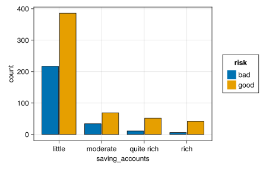
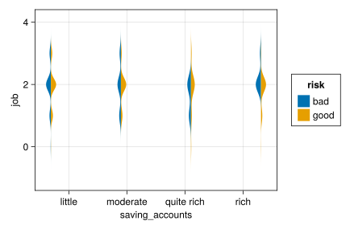
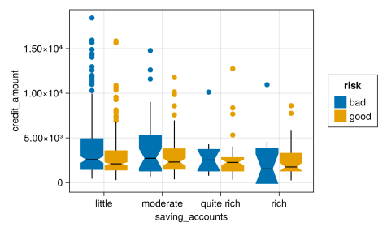
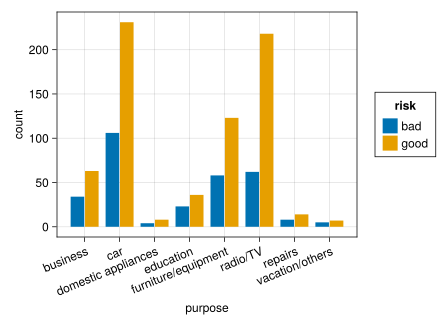
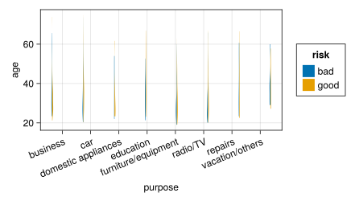
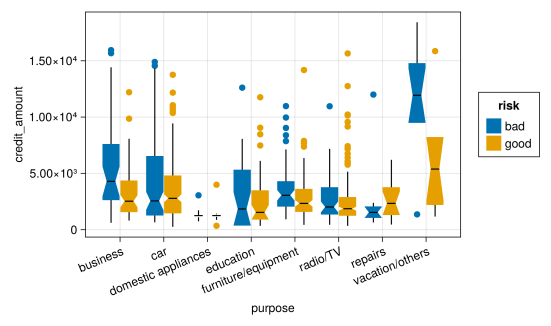
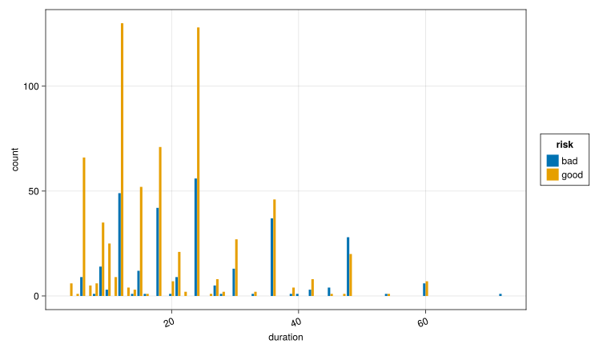
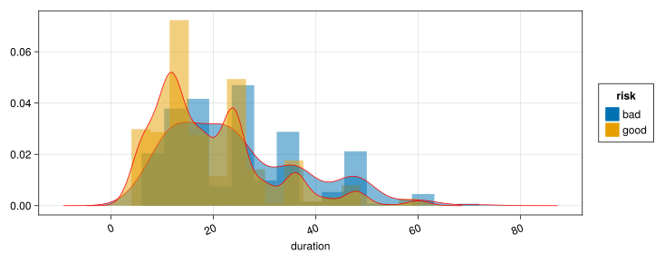

using CSV,DataFrames,Tidier,FreqTables,PrettyTables
using CairoMakie,AlgebraOfGraphics
using MLJGerman Credit Card Dataset
info
dataset1 : Analysis of German Credit Data
dataset2 : Predicting Credit Risk - Model Pipeline
there are two dataset name german credit .dataset1 is original data,but now we use dataset2, here is why change to dataset2 : Content
1. load package
2. load csv
df=CSV.File("../data/german_credit_data.csv")|>DataFrame
df=@chain df begin
#coerce(_, :creditability =>Multiclass)
@clean_names()
end
first(df,5)5×11 DataFrame
| Row | column1 | age | sex | job | housing | saving_accounts | checking_account | credit_amount | duration | purpose | risk |
|---|---|---|---|---|---|---|---|---|---|---|---|
| Int64 | Int64 | String7 | Int64 | String7 | String15 | String15 | Int64 | Int64 | String31 | String7 | |
| 1 | 0 | 67 | male | 2 | own | NA | little | 1169 | 6 | radio/TV | good |
| 2 | 1 | 22 | female | 2 | own | little | moderate | 5951 | 48 | radio/TV | bad |
| 3 | 2 | 49 | male | 1 | own | little | NA | 2096 | 12 | education | good |
| 4 | 3 | 45 | male | 2 | free | little | little | 7882 | 42 | furniture/equipment | good |
| 5 | 4 | 53 | male | 2 | free | little | little | 4870 | 24 | car | bad |
doc
No documentation found.
Binding catboost does not exist.
describe(df)11×7 DataFrame
| Row | variable | mean | min | median | max | nmissing | eltype |
|---|---|---|---|---|---|---|---|
| Symbol | Union… | Any | Union… | Any | Int64 | DataType | |
| 1 | column1 | 499.5 | 0 | 499.5 | 999 | 0 | Int64 |
| 2 | age | 35.546 | 19 | 33.0 | 75 | 0 | Int64 |
| 3 | sex | female | male | 0 | String7 | ||
| 4 | job | 1.904 | 0 | 2.0 | 3 | 0 | Int64 |
| 5 | housing | free | rent | 0 | String7 | ||
| 6 | saving_accounts | NA | rich | 0 | String15 | ||
| 7 | checking_account | NA | rich | 0 | String15 | ||
| 8 | credit_amount | 3271.26 | 250 | 2319.5 | 18424 | 0 | Int64 |
| 9 | duration | 20.903 | 4 | 18.0 | 72 | 0 | Int64 |
| 10 | purpose | business | vacation/others | 0 | String31 | ||
| 11 | risk | bad | good | 0 | String7 |
schema(df)┌──────────────────┬──────────┬──────────┐ │ names │ scitypes │ types │ ├──────────────────┼──────────┼──────────┤ │ column1 │ Count │ Int64 │ │ age │ Count │ Int64 │ │ sex │ Textual │ String7 │ │ job │ Count │ Int64 │ │ housing │ Textual │ String7 │ │ saving_accounts │ Textual │ String15 │ │ checking_account │ Textual │ String15 │ │ credit_amount │ Count │ Int64 │ │ duration │ Count │ Int64 │ │ purpose │ Textual │ String31 │ │ risk │ Textual │ String7 │ └──────────────────┴──────────┴──────────┘
3. EDA
3.1 saving_account_type
df31=@chain df @filter(saving_accounts !="NA")
ax=(width=400, height=300)
let
datalayer31=data(df31)
maplayer31=mapping(:saving_accounts,color=:risk,dodge=:risk)
vislayer31=visual(BarPlot, strokewidth=1,strokecolor=:black)
plt31=datalayer31*frequency()*maplayer31*vislayer31
draw(plt31,axis=ax)
end
3.2 saving_account_type and job relation
let
datalayer32=data(df31)
maplayer32=mapping(:saving_accounts,:job,color=:risk,dodge=:saving_accounts,
side=:risk)
vislayer32=visual(Violin)
plt32=datalayer32*maplayer32*vislayer32
draw(plt32,axis=ax)
end
3.3 saving_account_type and credit amount
let
datalayer33=data(df31)
maplayer33=mapping(:saving_accounts,:credit_amount,color=:risk,dodge=:risk)
vislayer33=visual(BoxPlot,show_notch=true)
plt33=datalayer33*maplayer33*vislayer33
draw(plt33,axis=ax)
end
3.4 explore purpose of creditcard use
3.4.1 purpose count
let
ax=(width=400, height=300,xticklabelrotation = pi/8)
datalayer34=data(df)
maplayer341=mapping(:purpose,color=:risk,dodge=:risk)
plt341=datalayer34*frequency()*maplayer341
draw(plt341,axis=ax)
end
3.4.2 purpose and age relation
let
ax=(width=400, height=200,xticklabelrotation = pi/8)
datalayer342=data(df)
maplayer342=mapping(:purpose,:age,color=:risk,dodge=:purpose,
side=:risk)
vislayer342=visual(Violin,datalimits=extrema)
plt342=datalayer342*maplayer342*vislayer342
draw(plt342,axis=ax)
end
3.4.3 purpose and credit amount
let
ax=(width=500, height=300,xticklabelrotation = pi/8)
datalayer343=data(df)
maplayer343=mapping(:purpose,:credit_amount,color=:risk,dodge=:risk)
vislayer343=visual(BoxPlot,show_notch=true)
plt343=datalayer343*maplayer343*vislayer343
draw(plt343,axis=ax)
end
3.5 duration count
let
ax=(width=800, height=500,xticklabelrotation = pi/8)
datalayer=data(df)
maplayer=mapping(:duration,color=:risk,dodge=:risk)
vislayer=visual(BarPlot)
plt35=datalayer*maplayer*frequency()*vislayer
draw(plt35,axis=ax)
end
#show(df.duration)
3.6 duration density
let
ax=(width=800, height=300,xticklabelrotation = pi/8)
datalayer=data(df)
maplayer=mapping(:duration,color=:risk)
vislayer=(visual(Hist,normalization=:pdf)+
visual(Density,strokewidth=1,strokecolor=:red))*visual(alpha=0.5)
plt=datalayer*maplayer*vislayer
draw(plt,axis=ax)
end
3.7 purpose and sex freqtable
tbl = freqtable(df,:purpose,:sex)8×2 Named Matrix{Int64}
purpose ╲ sex │ female male
────────────────────┼───────────────
business │ 19 78
car │ 94 243
domestic appliances │ 6 6
education │ 24 35
furniture/equipment │ 74 107
radio/TV │ 85 195
repairs │ 5 17
vacation/others │ 3 9